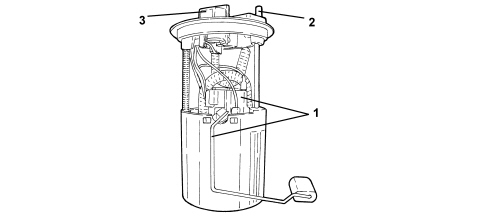
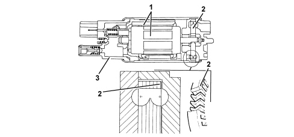

INTRODUCTION - FUEL TANK AND COMPONENTS
- Path
- Descriptions > 10 ENGINE > 1040 FUEL TANK AND PIPES > 1040A FUEL TANK AND COMPONENTS > INTRODUCTION - FUEL TANK AND COMPONENTS
- Kind
- system description
- Applies to
- engines: 1.4 8v; all production periods
- Interactive page
- https://sloeber94.github.io/elrnDB-fDbl/en/#/223000211
Applies to: engines: 1.4 8v; all production periods
SUBMERGED PUMP ASSEMBLY COMPLETE WITH LEVEL GAUGE
Composition
This essentially consists of:
- an electric fuel pump
- a fuel filter
- a float-type level gauge
- a diaphragm pressure regulator
- a mesh prefilter

1. Float level sensor
2. Supply connector
3. Electrical connection
Fuel pump
The fuel pump is equipped with a permanent magnet electric motor (1) that controls the pump (2) and a terminal mount cover (3) that contains the electrical and hydraulic connections.
The pump stage is single, peripheral flow type with high performance under low voltage and temperature conditions.
The advantages compared to pumps that operate on volumetric princples are as follows:
- reduced weight
- limited size.

Specifications:
- Capacity = 110 l/h
- Pressure 3.5 bar
- Voltage 12 V
- Current = 7.5 A
Inertia switch
The inertia switch is fitted on the passenger side near the front door pillar. If the vehicle is involved in an impact, it interrupts the connection to earth of the fuel pump and, as a result, the supply of fuel to the injection system.

A steel ball (1) fitted in a tapered housing (2) is normally held in place by the attractive force of an adjacent magnet.
Under specific deceleration loads, the ball is released from the magnetic detent and gradually emerges from the tapered mount. Its upward movement is dependent on cone angle.
A rapid release mechanism (3) over the ball forms a normally closed (NC) electrical circuit.
When struck by the ball, the mechanism changes position from a NC circuit to a normally open (NA) circuit and breaks the fuel pump earth circuit.
The switch may be reset by pressing a button protected by a flexible cover (4).